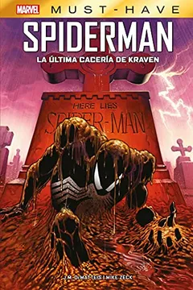
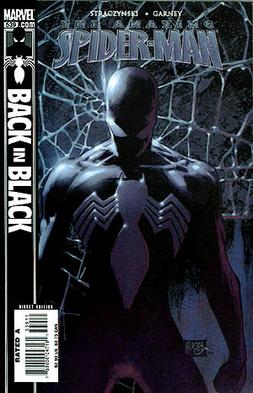
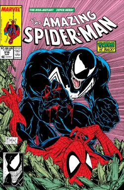
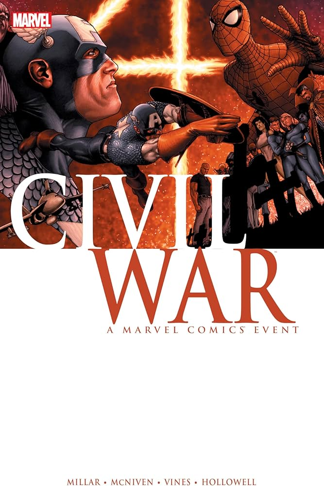
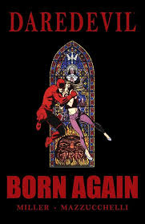
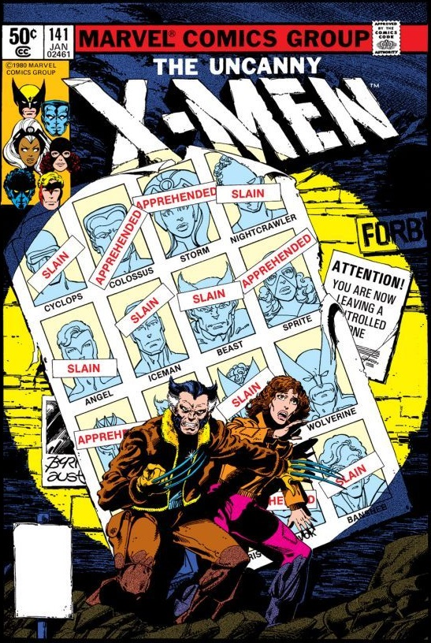

Spider-Man: Kraven's Last Hunt
Kraven El Cazador ha acechado y acabado
con la vida de todos los animales conocidos
por el hombre. Pero hay una bestia que se le
resiste, una que se burló de él en cada encuentro:
el superhéroe conocido como Spiderman. Ahora el
tiempo de jugar ha terminado. Acabará con la araña,
la enterrará y se convertirá en ella. Empieza
la Última Cacería de Kraven.

Spider-Man Back in Black
La bala de un francotirador lo cambia todo
en la vida de Spider-Man (Peter Parker)
Enfundado en su traje negro, Spider-Man
no se detendrá ante nada para encontrar
al hombre que apretó el gatillo y, aún
más importante, al hombre que dio la
orden de matar. Este es el Hombre Araña
en su momento más oscuro.

Spider-man:Blue
Es el Día de San Valentín, y en una fecha tan señalada
Peter Parker no puede olvidar a su primer amor, Gwen Stacy,
ella murió hace años pero su huella sigue presente. Esta es
la historia de como Peter Parker y Gwen Stacy se enamoraron,
«un relato del pasado visto a través de la perspectiva de los
años y de la conciencia de su principal protagonista», y antes
de que el fatal desenlace quebrase sus ilusiones y sueños de la
manera más cruel posible.

The Amazing Spider-Man
Cuenta la historia del traje negro, desde su primer
contacto con Peter Parker hasta su unión con Eddie Brock
para crear al villano llamado Venom.Desde el primer encuentro
entre Peter Parker y este traje se produce en el planeta Battleworld,
durante las Guerras Secretas junto a otros de los héroes
más conocidos de Marvel. Spiderman se cruza con este traje por accidente
De nuevo en la tierra, comienza a descubrir las distintas
propiedades del traje, pero descubre la verdad sobre
el traje, que es un alien que intenta unirse a Peter.

Civil War
el gobierno de los EE. UU. aprueba una Ley de registro
de superhéroes, aparentemente diseñada para que los individuos
superpoderosos actúen bajo la regulación oficial, algo similar
a la aplicación de la ley. Sin embargo, los superhéroes que se
oponen al acto, liderados por el Capitán América, se encuentran
en conflicto con aquellos que apoyan el acto, liderados por
Iron Man, con Spider-Man atrapado en el medio

Daredevil Born Again
Se centra en el descenso a la locura de Matt Murdock
(Daredevil) a la oscuridad despues de que Wilson Fisk
(Kingpin) exponga su identidad secreta buscando en ello
destruir a Murdock tanto personal como profesionalmente
Kingpin utiliza sus vastos recursos para desmantelar
sistematicamente la vida de Murdock, lo que hace que
pierda su practica legal como abogado, su hogar y sus
amigos, haciendo que Murdock toque fondo e incluso termine
sin hogar

El Hombre Sin Miedo
El origen definitivo del Diablo Guardián narrado por
el autor que mejor le conoce y por uno de los mejores
dibujantes que han pasado por su serie. Un fuego arde en
lo más profundo de Matthew Murdock, el hijo de un boxeador
asesinado por la mafia al que un accidente cambió su vida
para siempre. Pronto, un justiciero enmascarado vigilará las
calles más oscuras de la ciudad. Pero, antes de que eso ocurra,
un niño ciego tendrá que recorrer el camino que le llevará a
convertirse en el guardián de Hells Kitchen.

El Guantelete Del Infinito
la Muerte devolvió a la vida al villano. Y lo hacía con la única
misión de equilibrar el orden cósmico. Y es que esta piensa que hay un
excesivo número de vivos y el universo está descompensado y necesita ser
corregido. Está resurrección provocó que Thanos protagonizara su propia
colección, La Búsqueda de Thanos. Una miniserie dónde el Titán loco empezó
a buscar las gemas quitándoselas al Intermediario, al Campeón del Universo,
al Jardinero, al Corredor, al Coleccionista y al Gran Maestro.

X-MEN: Dias del futuro pasado
Nos ubicamos en un futuro donde los mutantes estadounidense
estan al borde de la extincion y retenidos por los centinelas
con lapidas de nombres conocidos que es el precio a pagar de
nuestros heroes, los escasos supervivientes de los X-MEN tienen
un plan desesperado, enviar al pasado a Kitty Pryde para impedir
un asesinato que acabara desencadenando el apocaliptico futuro
donde viven

Spider-Gwen
Gwen Stacy está de vuelta en las redes y tiene un misterio
completamente nuevo y diferente que resolver: ¡la reaparición
del Lagarto! La Mujer Araña de la Tierra-65 estaba convencida
de que la amenaza del Lagarto murió en sus brazos junto con
Peter Parker. Pero un nuevo alboroto reptil la deja con dudas
no solo sobre la vida de Peter, sino también sobre su muerte.
Mientras su padre, el Capitán George Stacy, lucha con la doble
vida de Gwen.